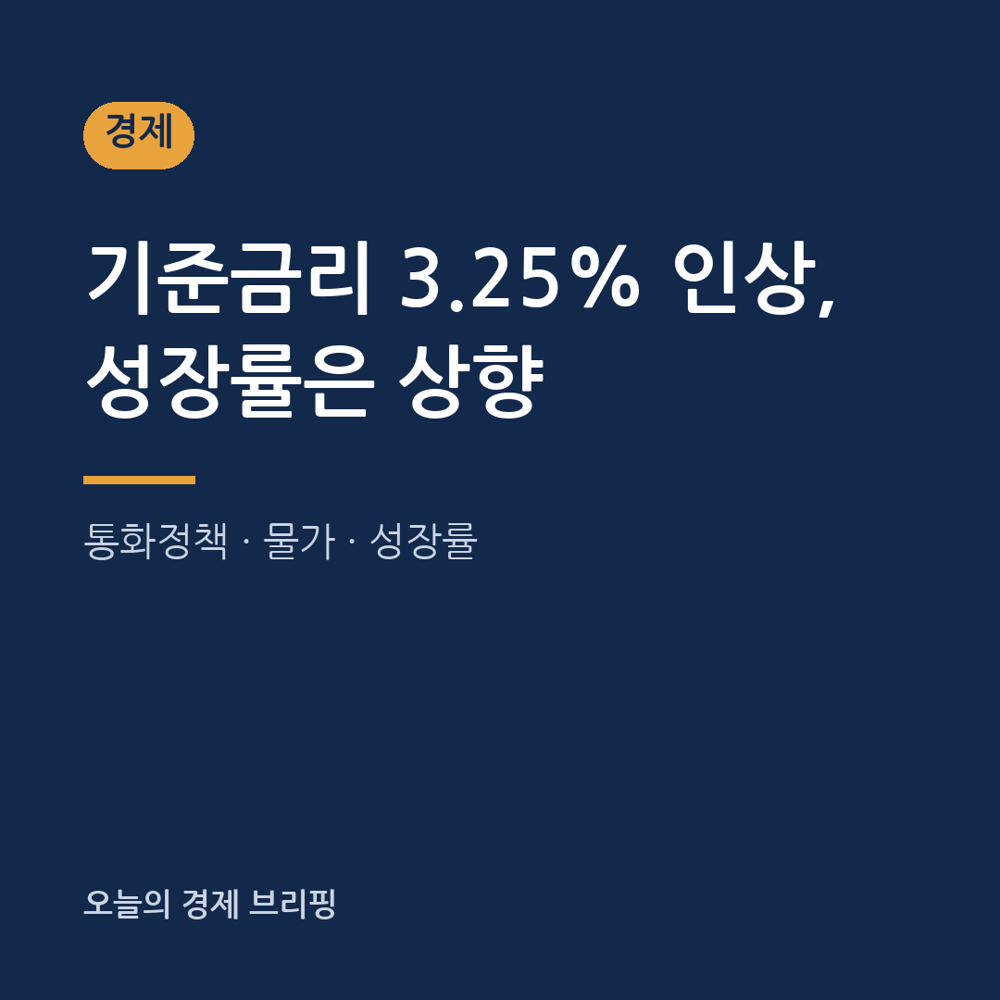
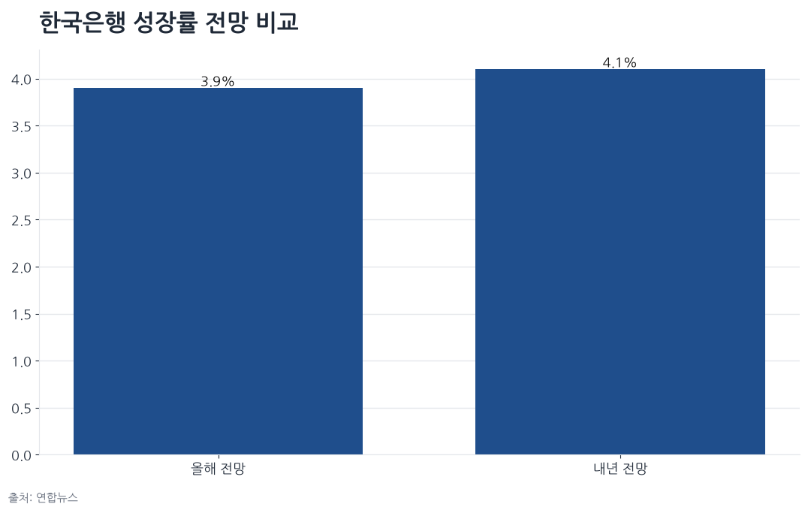

2026-11-26-1436-tistory 발행 키트 · 이 페이지는 검색에 노출되지 않습니다.
제목
카테고리
경제태그
본문 (그림·표 포함)
휴대폰 블로그 앱에서는 그림이 같이 붙지 않을 수 있어요. 그때는 [글자만 복사] 후 아래 이미지를 저장해 [그래프1]·[표1] 자리에 첨부하세요.

핵심 결론부터 말씀드리면, 연말 마지막 통화정책 회의를 연 한국은행이 정책금리를 연 3.25% 수준으로 끌어올렸고, 추가 인상 가능성도 열어 두었습니다. 같은 자리에서 내년 성장률 전망을 4.1%로 높여, 금리 인상과 성장 기대가 함께 나온 회의였습니다.
▶ 결정의 배경
한국은행은 11월 26일 통화정책방향 안건을 의결하고 기준금리를 3.25%로 정했습니다. 기준금리(한국은행이 정하는 정책금리)는 시중 대출·예금 금리를 움직이는 기준점입니다.
이날 신현송 총재는 소비자물가 상승률이 목표 수준에 수렴하는 시점을 2028년으로 제시했습니다. 물가 안정에 시간이 걸린다는 판단이 인상 결정과 추가 인상 시사의 바탕에 깔려 있는 것으로 읽힙니다.
▶ 핵심 내용: 주요 수치
회의 결과와 총재 발언에서 확인되는 수치를 표로 정리하면 다음과 같습니다.
11월 통화정책 결정 주요 수치
| 항목 | 수치·내용 | 출처 |
|---|---|---|
| 기준금리 | 연 3.25% | 매일경제 |
| 내년 성장률 전망 | 4.1% | 연합뉴스 |
| 물가 목표 수렴 시점 | 2028년 | 연합뉴스 |
| 명목 GDP | 지난해 2,600조 원 수준, 올해 3,000조 원 상회 | 매일경제 |
출처: 매일경제, 연합뉴스
성장률 전망은 올해 3.9%, 내년 4.1%입니다. 내년 전망치를 크게 올린 점이 이번 발표의 특징입니다.

총재는 명목 GDP(물가 변동을 반영한 경제 전체의 생산 규모)가 지난해 2,600조 원 수준에서 올해 3,000조 원을 상회할 것이라고 언급했습니다. 반도체 업종의 영업이익이 700조 원 규모라는 발언도 함께 보도됐습니다.
▶ 반도체 불확실성에 대한 한은의 점검
최근 증시는 AI와 반도체 관련 불안으로 변동성이 커진 상황입니다. 이에 한국은행은 반도체 경기가 예상보다 크게 위축되는 시나리오도 분석했습니다.
분석 결과, 그런 경우에도 내년 수출액은 1조 달러를 웃돌고 성장률은 3%대 중반에 이를 수 있다고 봤습니다. 기본 전망(4.1%)보다는 낮지만, 성장세가 유지된다는 의미입니다.
▶ 가계와 기업에 미치는 영향
첫째, 변동금리 대출 보유자는 금리 조정 시점에 이자 부담이 늘 수 있습니다. 추가 인상 시사가 있었던 만큼 단기간에 부담이 줄어들 가능성은 크지 않습니다.
둘째, 물가 목표 수렴 시점이 2028년으로 제시된 만큼 생활물가 부담은 당분간 이어질 수 있습니다. 셋째, 반도체 업황 의존도가 높은 한국 경제의 특성상 수출 흐름이 향후 성장률을 좌우할 변수입니다.
▶ 확인할 점
다음 금융통화위원회에서 추가 인상이 실제로 이뤄지는지, 총재 발언의 구체적 신호가 무엇인지 확인해야 합니다. 보유 대출의 금리 유형과 조정 주기는 거래 은행 앱이나 약정서에서 확인할 수 있습니다.
또한 반도체 업황과 증시 변동성이 수출·성장 전망에 반영되는지, 한국은행이 공개하는 경제전망 자료를 통해 점검하는 것이 좋습니다.
▶ 정리
1. 한국은행이 기준금리를 연 3.25%로 인상하고 추가 인상 가능성을 시사했습니다.
2. 물가 상승률의 목표 수렴 시점은 2028년으로 제시됐고, 올해·내년 성장률 전망은 각각 3.9%, 4.1%입니다.
3. 반도체 경기가 크게 꺾여도 내년 성장률은 3%대 중반으로 분석돼, 대출 금리 점검과 수출 흐름 확인이 필요합니다.
출처 (본문 맨 아래에 붙여넣기 권장)
- 연합뉴스, [일문일답] 한은 총재 "물가상승률, 2028년 목표 수준에 수렴", https://www.yna.co.kr/view/AKR20261126115800002 - 매일경제, 신현송 한은 총재 “물가 상승률, 2028년 목표 수준에 수렴”…추가인상 시사, https://www.mk.co.kr/news/economy/12219235 - 연합뉴스, [연합뉴스 이 시각 헤드라인] - 14:30, https://www.yna.co.kr/view/AKR20261126120000011 - 매일경제, 한은 총재 “올해 명목GDP 3000조원 상회…반도체 영업익 700조원”, https://www.mk.co.kr/news/economy/12219230 - 매일경제, 한국은행 “반도체 악재 겹쳐도 내년 3%대 중반 성장”, https://www.mk.co.kr/news/economy/12219284 - 한국은행, 2026년도 의안 제36호 - 통화정책방향, https://www.bok.or.kr/portal/bbs/P0000093/view.do?nttId=11067096&menuNo=200789